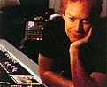
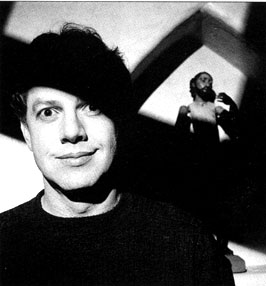
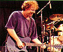

Penthouse article
January 1996
by Wayne Robins



What would you have said ten years ago if someone insisted that Nik Kershaw would be the John Williams of his generation, or that Alex Chilton would be such a prolific composer of film scores that he'd be compared to Henry Mancini? You mihgt have said, "Holy hallucinations, Batman!" But when it comes to former new wavers as film composers, roll over, Stewart Copeland, and tell Joe Jackson the news: In the ten years since Pee-Wee's Big Adventure, Danny Elfman has gone from the gritty clubs of Hollywood, where his band Oingo Boingo used to play, to player in the Hollywood of his boyhood fantasies.
"I was a movie nut," Elfman says. "I went three of four times a week if I could." As a kid, he loved those weird myth-based movies like Jason and the Argonauts and The 7th Voyage of Sinbad - anything, in fact, that featured either animated special effects by Ray Harryhausen or fright composer extraordinaire Bernard Herrmann, a longtime collaborator with Alfred Hitchcock on shock masterpieces like Vertigo and Psycho.
"If it was a movie that had a dual punch, it was a sure winner for me," Elfman says. "Owing all to Bernard Herrmann, I became aware of his name in association with my favorite movies when I was 11 or something. It suddenly occurred to me that music wasn't put there magically, but that somebody acutally did it. Every time I saw this name in the credits at the beginning of a science fiction movie, I said, 'Oh boy, this ig going to be just a little bit better!' And if you added Harryhausen's animation, my chances of loving the film were 99.9 percent."
When it came to literature, Elfman was hooked on Famous Monsters of Filmland magazine, which still flourishes under the guidance of its pun-mad founder, Forrest J. Ackerman, sometimes known as "Dr. Acula." The magazine's balance between the hilarious and the horrifying provided the perfect grounding for Elfman's subsequent approach to music and film. "Elfman moves effortlessly from the mock-sitcom 'The Simpsons' to the heavily Germanic Batman," Stephen Handzo wrote in the scholarly film journal Cineaste, in recognition of the young composer's versatility.
Indeed, Elfman's soundtrack work covers an astonishing range. Just listen to some of the films and shows represented in his soundtrack anthology, Music for a Darkened Theater (MCA). There's Pee-Wee's Big Adventure, as frolicsome as a ride on some majestic carousel, along with his Beetlejuice, which is disjointed, wacky, like slicing open the skull of a cartoon corpse and finding reams of cold spaghetti. Or check out the Pacific rimshots that begin Wisdom, which then goes on to touch on Eurasian, North African, Middle Eastern, and sub-Saharan styles, compressing the whole World Beat movement into a two-minute single. Elfman goes Stax-Volt Memphis on Midnight Run and gets into quintessential TV-theme mode for "The Simpsons," a careening joyride on a truck hauling nitroglycerin that's running brakeless down a mountain road, finally crashing through your TV and exploding what's left of the nuclear family.
And then ther's Batman (as well as Batman Returns). All the films he did with Tim Burton - in fact, all of Burton's previous films - were setups to this career slam-dunk, gandiose and claustrophobic, capturing perfectly the totalitarian mood of Gotham City on the verge of spiritual catastrophe.
"His movies were kind of milestones for me," Elfman says of working with Burton. "Edward Scissorhands is my personal favorite, and The Nightmare Before Christmas was a whole new dimension." For that 1993 film, Elfman acted as assoiciate producer, wrote the score, songs, and lyrics, as well as being the screen voice of Barrel and the singing voice of the animated musical's main character, Jack Skellington.
But the prolific and profitable relationship ended after Nightmare. Michael Fleming, the well-connected reporter and gossip columnist for the show-biz weekly Variety, says he believes that Elfman was angry at Burton and backed out of doing the music for Ed Wood.
"Tim is not a very verbal guy, and is hard to communicate with," Fleming says. "He often goes into his bunker and nobody hears from him. Danny might have wanted more out of Tim than he's willing or able to give."
Elfman declines to be specific about his rift with Burton. "It ended," he explains. "Why does any marriage end? We had a falling out, and that was that. There were many complex reasons, none on the personal level, which I won't really get into."
But Elfman's film-composing career has continued to thrive without Burton. For Taylor Hackford's intense family drama Dolores Claiborne, Elfman underscored every one of the film's 100 or so minutes. "I actually tried to get the director to drop some cues," Elfman says. "It was more music than perhaps I would have done, but he wanted a kind of tone going all the time. I knew it was going to be a challenge. The music had to be very understated. A lot of dark things were happening in this movie, of a more serious nature than anything I had done. Not Batman-like dark, but child-molestation kind of dark, which is a whole different ball game. I was excited about writing very dense music, and getting much more into string textures - it was almost entirely a string orchestra - and dissonance, which I've always enjoyed doing, but don't get to do very often."
That is quite a musical mouthful for anyone to bite off, much less a largely self-taught occasional rock 'n' roller like Elfman. While he was growing up in southern California, his parents were both teachers. (His mother, Blossom Elfman quit teaching to write a successful series of mysteries and books for young adults.)
Elfman, of course, had no use for school. "In my mind, education pretty much stopped with junior high," he syas. "I just lost interest and started getting into movies." Elfman's indirect facilitator in turning an obsession into a vocation was his brother Richard. Richard was working in Paris with an avant-garde musical-theater troupe called Le Grand Magic Circus when Danny graduated from high school. Danny went over to Europe and toured with the Magic Circus. "I wanted to take an instrument with me," he says, "so, being a Stephane Grappelli fan, I thought I'd take a violin."
Elfman went on to travel alone to such unlikely places as West Africa, "scratching away" on his violin. After nearly a year, he returned to Los Angeles, where Richard had started another musical-theater aggregation called the Mystic Knights of the Oingo Boingo. Elfman joined that group - playing trombone, guitar, and whatever else he could get his hands on - for eight years, through the seventies.
"Over those eight years," Elfman tells us, "I started writing and transcribing music, and the musicianship went from being a total street band to having good musicians who read music. We did a lot of 1930s material mixed with kind of crazy compositions. Transcribing Duke Ellington piano solos was the first thing I did. It was great training, because they're amazingly complex in their simplicity. I developed an enormous amount of confidence in my ability to hear any kind of riff go by and hold on to it, and eventually write it down. Then I started composing ambitious pieces, such as 'The Piano Concerto Number One and a Half.' That was a crazy Prokofiev-like piece that, if anything, was a precursor to film scoring."
But the movies would wait. When the Mystic Knights disbanded, Danny maintained the core, which became the new wave band Oingo Boingo. They were accepted as engaging oddballs in Los Angeles, but the rest of the country had decidedly mixed feelings. Either you didn't care much one way or another or you flet, as New York rock critic Robert Christgau did, that they combined "the worst of Sparks with the worst of the Circle Jerks."
But Elfman turned out to be more multidimensional than even Christgau's crusty comment would have you believe. "The guy onstage with Oingo Boingo is entirely different from the guy you have luch with, or have business meetings with," says Kathy Nelson, head of soundtracks for MCA Records, which has released numerous Elfman soundtracks, as well as an Oingo Boingo compilation. "He's extremely complex as a person."
Getting that first movie score was simple serendipity. Tim Burton, an Oingo Boingo fan, was going to direct Paul Reubens, a.k.a. Pee-Wee Herman, in Pee-Wee's Big Adventure. Elfman's and Reuben's paths had crossed a few years earlier, when Danny did the music for an underground cult film called Forbidden Zone, directed by his brother Richard.
When Burton's and Reubens's first choice for composer was unavailable, Elfman's name showed up on both of their lists. Danny syas, "Paul has told me since that he had me on the list early on, but what made Tim take the leap and hire me, I'll never know."
As soon as the film came out, Nelson started getting calls from agents offering to handle Elfman's career as a composer, which has gone on to include silly flicks like Hot to Trot and Summer School and big-budget bonanzas like the Batman films, Darkman, Sommersby, and Dick Tracy.
There are also TV themes for "The Simpsons," "Tales From the Crypt," and the "Beetlejuice" cartoon show, as well as soundtracks to episodes of "Amazing Stories" and "Alfred Hitchcock Presents."
Is this what Danny Elfman wants? Even he is torn by his perfectionism and drive. "There are really two stages to composing," Elfman says. "One is blocking out scenes and coming up with themes, and that's the really exciting, fun part. The second part is writing it all down, and that is always miserable. Starting the first cue is like taking the first step up Mount Everest - it feels impossible. And halfway through, I make a solemn vow that I will never do it again as long as I live."
So after a film project is finished, Elfman very frequently wire up Oingo Boingo - something that doesn't make him entirely happy either. "At the end of a film, all he'd want to do is go on the road with his band," Kathy Nelson says. "And after a week on the road, all he'd want to do was a movie."
Still, the twin passions kept Elfman's creative vision fresh. "There have been times when I'm sick of everything and never want to pick up a guitar agian, and I'd go completely underground into film work," he says. "The I would resurface, and suddenly there'd be something exciting happening in music. Like the first time I heard sampling in dance music. I thought, those sounds are so... interesting! Or when things started loosening up at the beginning of the nineties - I was hating just about everything by then. Then I got re-engaged by bands I thought were incredible, like Jane's Addiction, and Nirvana and Alice in Chains - a whole bevy of inventive, wonderful stuff. When I heard Primus for the first time, it was a complete inspiration for me."
Yet the balance has tilted decisively toward film work, and Oingo Boingo may well be history. A West Coast tour in October was Oingo Boingo's sayonara, and a live album is planned.
Besides, Elfman has plenty to do at the movies. After Gus Van Sant's To Die For, Elfman wants to work on his own film projects, including a dark fantasy-world musical called Little Demons, another musical called The World of Jimmy Callicut, and a movie called Julian. On each of these projects, Elfman has written music and script, and will either produce or direct.
It's no wonder then, that when he's asked if he has unrealized ambitions, the list still seems endless. "Well, yeah, I've got nothing but!" he exclaims. "I feel like I've only started to scratch the surface as a composer. As a [screenplay] writer, I've barely begun. I've written three scripts now. Whether I can cross that valley and actually make on of the films I'be been trying to develop is yet to be seen.
"Eventually I will, because I'm very persistent," he continues, "and I know there's a strange, twisted market out there somewhere for my work, which is hardly mainstream. It's for others with a slightly off-kilter kink in the brain."